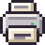
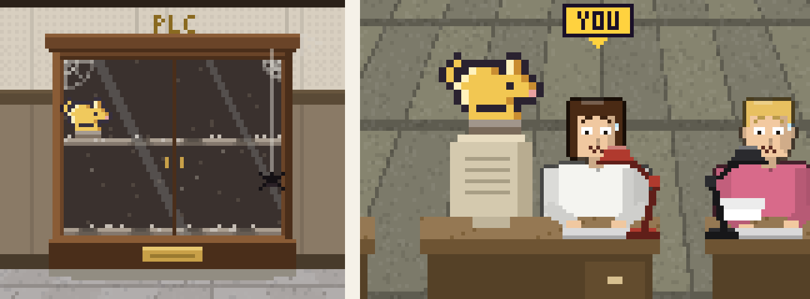
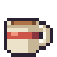

Das Mitarbeiterhandbuch
1. Die Grundlagen
Du startest als Praktikant, der in der Teeküche im Keller der Synergex plc Tee kocht. Jede Etage des 30-stöckigen Turms hat ihren eigenen Job – ein Gerät oder einen Schreibtisch, der auf Zeit arbeitet und bei Fertigstellung Geld ausschüttet. Dein Ziel ist es, Geld zu verdienen, Upgrades zu kaufen und dich bis in die oberste Etage befördern zu lassen.

Dein erster Job: Tee kochen. Tippe darauf, um die Runde zu beschleunigen.
- Jobs verdienen von ganz allein. Sobald ein Job gestartet ist, läuft er weiter – selbst wenn die App geschlossen ist.
- Level Jobs auf, um mehr zu verdienen und die Plätze mit Kollegen zu füllen.
- Fülle die Büro-Kudos-Leiste oben auf dem Bildschirm und tippe darauf, um um eine Beförderung zu bitten.
- Jede Beförderung steigert alle deine Einnahmen, und alle paar Beförderungen ziehst du eine Etage höher zu einem neuen Job.
An deinem ersten Tag führt dich Brenda aus der Personalabteilung herum, sodass du alles direkt in der Praxis lernst.
Jede Zwischensequenz lässt sich mit Überspringen oben rechts überspringen, genau wie der Rundgang. Beide fragen vorher nach.
2. Synbux, Büro-Kudos und goldene Büroklammern
| Währung | Wofür sie da ist |
|---|---|
| Wird jedes Mal verdient, wenn ein Job fertig wird. Gib es für Job-Level und Werkzeuge aus. | |
| Wird ebenfalls bei jeder Auszahlung verdient. Wird nie ausgegeben: Fülle die Leiste, um deine nächste Beförderung freizuschalten. | |
| Die Premium-Währung. Erhältlich durch Beförderungen, Herausforderungen, deine Stempelkarte, Events und Werbebelohnungen oder im Shop gekauft. Nutze sie für Boosts, Zeitsprünge und Premium-Werkzeuge. |
3. Orientierung im Büro
Der Hauptbildschirm zeigt eine Etage des Turms in der Seitenansicht. Wische nach links und rechts, um hindurchzugehen, und zoome mit zwei Fingern. Fast alles lässt sich antippen.

- Der Job der Etage. Tippe darauf, um ihn zu beschleunigen. Das Etikett unten zeigt sein Level, die Einnahmen und den Level Up-Button.
- Deine Kollegen. Die Tische füllen sich mit steigendem Job-Level. Tippe jeden an für einen flotten Spruch.
- Dein Schreibtisch (markiert mit DU) steht auf der Etage, auf die du befördert wurdest.
- Das Büro der Leitung. Tippe den Chef an, um zu hören, was er denkt.
- Die Aufzüge. Tippe auf einen Aufzug für die Etagenknöpfe und fahre zu jeder freigeschalteten Etage.
- Drucker und Wasserspender. Tippe sie für eine Überraschung an.
- Das Fluchttreppenhaus. Behalte das Treppenhaus im Auge: Leute kommen und gehen.
Der Karten-Button in der oberen Leiste (der kleine Turm) zeigt das gesamte Gebäude: deine freigeschalteten Etagen, deinen Schreibtisch und wer welche Etage leitet.
Wische nach oben und unten, um über und unter die Etage zu schauen: die Zwischendecke (und auf der obersten Etage das Dach) und die Etage darunter.
Der Tag folgt der Uhr deines Handys: Sonnenaufgang ab 6 Uhr, Dämmerung ab 17 Uhr. Ab 19 Uhr gehen die Schreibtischlampen an, die Reinigungskräfte machen ihre Runde, und manche Nächte regnet es.
4. Das Foyer
Das Erdgeschoss ist das Foyer, und das Spiel startet jedes Mal hier. Tippe oben auf ↩ MEIN SCHREIBTISCH, um zu deiner Etage zu fahren, oder nimm den Aufzug.

- Die Aufzüge zurück zu den Büros.
- Die Stempeluhr. Tippe darauf für deine Stempelkarte und Serie (siehe Einstempeln).
- Das Schwarze Brett. Während eines Events zieht sich ein EVENT-Band über die Ecke: Tippe das Brett fürs Event an. Sonst hängen dort die üblichen Büromitteilungen.
- Das „Baldiges Event!“-Plakat. Es erscheint sieben Tage vor Beginn eines Events. Tippe darauf, um zu sehen, was ansteht.
- Maxine am Empfang, ständig am Telefon. Hat sie Neuigkeiten vom Chef, schwenkt die Kamera zu ihr: Tipp sie an, um sie zu hören. Sie überreicht dir auch deine Pokale. Einmal pro Woche braucht sie außerdem Hilfe bei der Suche nach Fundsachen (siehe Fundsachen).
- Ron vom Sicherheitsdienst. Er winkt freundlich.
- Stan der Hausmeister. Tippe ihn an für Über das Spiel: App-Version, Neuigkeiten und Lizenzen. Ein paar Tage nach deinem Start möchte er dich vielleicht unter vier Augen sprechen (siehe Stans Rattenjagd).
- Der Eingang. Besucher kommen durch die Drehtür herein.
- Die Pokalvitrine. Tipp sie an, um hineinzuschauen (siehe Pokale).
5. Jobs und Level
- Starte einen Job mit seinem ersten Level und level ihn auf mit Synbux. Jedes Level bringt mehr ein.
- Bei Level 10, 25, 50, 100 und darüber hinaus arbeitet der Job doppelt so schnell.
- Tippe auf einen Job, um ihn anzutreiben. Jeder Tipp verkürzt die aktuelle Runde und die Einnahmen steigen in Gold auf.
- Büro-Überlastung. Tippe schnell und die Büro-Überlastung-Anzeige erscheint links. Je heißer sie wird, desto mehr ist jeder Tipp wert (bis zu x2,5) und desto mehr gerät das Büro in Panik. Fülle sie ganz und die Etage erleidet für einige Sekunden einen totalen Kollaps: pures Chaos und jeder Tipp zählt dreifach (x3). Danach brauchen alle kurz Pause zum Abkühlen.
- Im Fenster Aufgaben kannst du 1 Level, 10 Level oder MAX (so viele du dir leisten kannst) auf einmal kaufen.
6. Beförderungen und Etagen

- Es gibt 150 Beförderungen – fünf auf jeder der 30 Etagen.
- Wenn die Büro-Kudos-Leiste voll ist, blinkt sie: Tippe darauf, um um eine Beförderung zu bitten.
- Jede Beförderung multipliziert alle Synbux (×1,10) und alle Büro-Kudos (×1,06).
- Die erste Beförderung auf jeder Etage verlegt deinen Schreibtisch ein Stockwerk höher, schaltet den Job dieser Etage frei und belohnt dich mit goldenen Büroklammern. Ein neuer Manager stellt sich vor.
- Die 2. und 4. Beförderung auf einer Etage schalten deren Werkzeuge frei.
- Dein Outfit wird umso schicker, je höher du aufsteigst.
Die Etagen reichen vom Support (Tee, Post, Fotokopieren) über Verwaltung, IT und Gebäudetechnik, Management und Führungskräfte bis zu den Vorstandsetagen: Fusionen, Golf und ganz oben Das Imperium leiten.
7. Aufgaben, Werkzeuge, Karriere und Shop
Die vier Buttons am unteren Rand öffnen Menüfenster über dem Büro:
| Button | What's inside |
|---|---|
| Alle deine Jobs: Level, Einnahmen, der nächste Tempo-Meilenstein und Sammelkauf von Leveln. | |
 Werkzeuge | Einmalige Upgrades. Jede Etage hat zwei (eines verdreifacht den Lohn, eines verdoppelt das Tempo), plus firmenweite Werkzeuge für Tempo, Lohn, Kudos und längere Abwesenheitszeit sowie mit Klammern gekaufte Premium-Werkzeuge. Wenn dir etwas Geld fehlt, setzt Jetzt zahlen alle deine Synbux ein und Büroklammern decken den Rest. |
| Jeder Rang im Unternehmen, die dafür nötigen Büro-Kudos und die Büroklammer-Belohnung. | |
| Tagesangebote, Gratis-Boni (Werbung), VIP, Büroklammer-Pakete und nützliche Extras: Überstunden (doppeltes Tempo für 30 Minuten) und Zeitsprünge (Lange Mittagspause 1 Stunde, Halber Tag 4 Stunden, Feiertag 24 Stunden Lohn sofort). |
8. Während du weg bist
- Dein Team arbeitet weiter, wenn die App geschlossen ist – bis zu deiner maximalen Abwesenheitszeit: 3 Stunden zu Beginn, bis zu 24 Stunden mit Werkzeugen, plus 4 zusätzliche Stunden für VIPs.
- Wenn du zurückkehrst, zeigt dir die Karte Zurück im Büro deine Einnahmen. Tippe auf Einsammeln oder Verdoppeln durch einen kurzen Werbespot (VIPs verdoppeln sofort).
- Wenn deine Abwesenheitszeit abläuft, pausiert die Arbeit, bis du zurückkehrst. Eine Erinnerung informiert dich, wenn dein Posteingang voll ist (in den Einstellungen aktivierbar).
- Eine Woche oder länger weg gewesen? Ein Willkommensgeschenk wartet: 10 goldene Büroklammern und eine 30-minütige Kaffeepause.
- Bildschirm anlassen (in den Einstellungen) hält dein Telefon wach, während das Spiel geöffnet ist, damit du dem Büro beim Arbeiten zuschauen kannst.
- Drückst du Zurück, wirst du gefragt, ob du ausstempeln möchtest. Beim Ausstempeln wird dein Spielstand gesichert (auch in der Cloud, falls angemeldet), bevor sich der Bildschirm ausschaltet.
9. Tägliches Einstempeln
Tippe auf die Stempeluhr im Foyer (sie öffnet sich auch bei deinem ersten Besuch des Tages), um deine Anwesenheitsbelohnung abzuholen. Die Karte läuft über sieben Tage und die Belohnungen wachsen im Laufe der Woche:
| Tag | Belohnung |
|---|---|
| 1 | |
| 2 | |
| 3 | |
| 4 | |
| 5 | |
| 6 | |
| 7 |
- Wöchentlicher Serien-Bonus: Jede volle Woche in Folge bringt +5 % Bonus auf Synbux- und Kudos-Belohnungen, bis zu +25 %. Tag 8–14 erhalten +5 %, Tag 15–21 erhalten +10 % usw. Büroklammern bleiben konstant. Die Karte zeigt deine Serie und den aktuellen Bonus.
- Einen Tag verpasst? Hast du bis zu zwei Tage verpasst, kannst du deine Serie retten, indem du ein Werbevideo ansiehst (für VIPs kostenlos), oder bei Tag 1 neu beginnen.
- Eine Erinnerung um 18:30 Uhr benachrichtigt dich, falls die heutige Belohnung noch wartet.
10. Herausforderungen
Es gibt 50 Herausforderungen, die nacheinander über den #-Button rechts aufgerufen werden. Die Leiste füllt sich bei Fortschritt und blinkt mit EINFORDERN!, wenn eine geschafft ist. Jede belohnt mit goldenen Büroklammern (von 3 bis 25 Stück). Sie führen dich an Features heran, die du vielleicht noch nicht entdeckt hast: Aufzug, Karte, Kaffeepausen oder Werkzeuge. Spätere Aufgaben dauern Tage oder Wochen.
11. Stans Rattenjagd
Ein paar Tage nach deinem Start winkt dich Hausmeister Stan im Foyer zu sich: Die Chefetage hat ein Rattenproblem, von dem lieber niemand erfahren soll.
- Fang 100 Ratten, indem du sie antippst, wenn sie über die Etage huschen, die du gerade ansiehst. Abends und nachts kommen sie öfter heraus.
- Tipp Stan jederzeit an, um zu sehen, wie viele du schon gefangen hast.
- Alle gefangen? Geh zu Stan und hol dir 30 goldene Büroklammern und den Pokal Goldene Ratte.
12. Papierstau im Kopierer
Ab und zu, während du eine Etage anschaust, klemmt ihr Drucker: Er ruckelt, qualmt, blinkt rot und ruft STAU! Ist er nicht im Bild, schwenkt die Kamera hin, und ein STAU!-Schild mit Pfeil zeigt dir den Weg zurück.
- Tippe den Drucker an, um ihn zu öffnen. Du hast 10 Sekunden, um die Klappe zu öffnen, die sein kleines Display nennt (A, B oder C), das zerknüllte Papier herauszuziehen und die Klappe wieder zu schließen. Die falsche Klappe kostet dich eine Sekunde.
- Rechtzeitig repariert, arbeitet der Job dieser Etage 5 Minuten lang doppelt so schnell. Läuft die Zeit ab, verlierst du nichts.
- Lässt du ihn in Ruhe, tritt nach ein paar Minuten jemand dagegen. Es gibt bis zu drei Papierstaus am Tag.
13. Finde den Drückeberger
Ab und zu winkt dich der Chef einer Etage heran: Jemand auf der Etage drückt sich. Tippe den Chef an, um mit der Suche zu beginnen.
- Du hast 30 Sekunden und einen Hinweis. Der Drückeberger schläft vielleicht am Schreibtisch, versteckt sich hinter einer Zeitung, spielt am Handy oder hockt unter einem leeren Schreibtisch. Schau genau hin: Es ist unauffällig.
- Tippe ihn an, um ihn zu erwischen. Tippst du jemanden an, der wirklich arbeitet, kostet dich das 3 Sekunden.
- Erwischt? Dann gibt dir der Chef Büro-Kudos, umso mehr, je schneller du warst. Bis zu zweimal am Tag.
14. Feuerübungen
Einmal am Tag setzt die Hausverwaltung eine Feuerübung für irgendwann zwischen 10 und 15 Uhr an. Eine Mitteilung sagt dir, wann, und 15 Minuten vorher kommt eine Benachrichtigung (wenn Erinnerungen an sind).
- Sei in den zwei Stunden danach auf deiner eigenen Etage, und der Alarm geht los: Alle geraten in Panik. Bist du woanders im Gebäude, bringt dich ein blinkender ÜBUNG-Knopf hin.
- Tippe jede Person an, um sie zum Notausgang zu schicken, bevor die Zeit abläuft. Wische über die Etage, um alle zu erreichen. Manche muss man zweimal auffordern, den Chef immer.
- Du bekommst Synbux für jeden, der rausgekommen ist, und einen Bonus, wenn es alle sind. Jede Etage hat ihre Bestzeit. Verpasst du die Stunde, gibt es keine Übung und keinen Schaden.
15. Maxines Fundsachen
Nach deiner ersten Woche bei Synergex braucht Maxine jeden Montag Hilfe: Jemand hat seine Sachen im Gebäude verloren. Eine Benachrichtigung um 9:30 Uhr sagt dir, dass eine neue Suche begonnen hat.
- Tipp Maxine an, wenn sie winkt, um zu erfahren, wessen Sachen fehlen. Versteckt ist erst etwas, wenn du ihr zugehört hast.
- Je mehr Etagen du geöffnet hast, desto mehr gibt es zu finden: anfangs eine Sache auf deiner eigenen Etage, später bis zu vier, verteilt auf Etagen, Foyer und Keller. Manches sieht man nur, wenn man nach oben in die Zwischendecke oder nach unten unter den Boden wischt.
- Halte nach einem seltenen Glitzern Ausschau und tipp den Gegenstand an, um ihn aufzuheben. Das Fenster SUCHE rechts zeigt, was noch fehlt. Anfangs gibt es keine Hinweise: Am letzten Tag bekommt alles, was noch fehlt, einen (einen Tipp zur Art des Ortes) und glitzert etwas öfter.
- Finde alles bis Donnerstag, 20 Uhr, und bring es Maxine zurück: Dafür gibt es 5 goldene Büroklammern. Schaffst du es nicht sofort zu ihr, hebt sie die Belohnung bis zur nächsten Suche auf. Was Donnerstagabend noch fehlt, landet im Müll.
- Jede Woche gibt es eine neue Geschichte.
16. Pokale und die Pokalvitrine

Die Goldene Ratte in der Pokalvitrine und auf deinem Schreibtisch.
- Für manche Dinge gewinnst du einen Pokal, etwa die Goldene Ratte für Stans Rattenjagd. Maxine am Empfang überreicht dir jeden davon mit Dank vom Chef.
- Neue Pokale kommen in die Pokalvitrine im Foyer. Tipp sie an: Die Türen öffnen sich und zeigen jeden Pokal mit Namen und Datum, nach Jahren sortiert.
- Bis zu drei stehen auf deinem Schreibtisch: ein großer auf dem Monitor und zwei kleine davor. Tipp einen Pokal an und wähle Groß, Links, Rechts oder Vitrine.
- Darunter Noch zu gewinnen: Silhouetten der Pokale, die du noch nicht gewonnen hast. Tippe eine an, um einen Tipp zu bekommen. Bist du halb am Ziel, leuchtet sie und zeigt deinen Fortschritt. Ein saisonaler Pokal erscheint einen Monat vor seinem Event; verpasst du ihn, wartet er aufs nächste Jahr. Nur gewonnene Pokale vertreiben den Staub.
- Die Vitrine verstaubt seit Jahren. Je mehr Pokale darin stehen, desto sauberer wird sie, und ist sie voll, zieht sogar die Spinne aus.
17. Events
- Events laufen über einen begrenzten Zeitraum mit Bonus-Jobs und Boosts, wie doppelten Kudos oder ×1,5 Synbux.
- Achte sieben Tage vor Beginn auf das „Baldiges Event!“-Plakat im Foyer und während des Events auf den Event-Button rechts.
- Manche Events schalten eine Etappe pro Tag frei. Schließe jede Tagesetappe an ihrem Tag ab; verpasste Etappen sperren sich. Du kannst sie bis zum Event-Ende mit 5 Klammern oder per Werbevideo öffnen (für VIPs gratis). Schließe alle Etappen ab, um einen Pokal für die Pokalvitrine zu gewinnen (siehe Pokale).
- Event-Jobs richten sich preislich nach deinem aktuellen Einkommen und sind somit auf jedem Rang fair gestaltet.
18. Kaffeepausen, Werbung und VIP

Kaffeepause: Schau einen kurzen Werbespot und alles läuft 15 Minuten lang doppelt so schnell. Pausen lassen sich bis zu 4 Stunden stapeln. Gratis-Klammern: Schau ein Werbevideo für 3 goldene Büroklammern (bis zu dreimal täglich).
Gratis-Klammern: Schau ein Werbevideo für 3 goldene Büroklammern (bis zu dreimal täglich). Werbung ist immer deine freiwillige Entscheidung (bis zu 10 belohnte Werbeanzeigen pro Tag). Zudem gibt es einen kurzen Spot nach jeder dritten Beförderung.
Werbung ist immer deine freiwillige Entscheidung (bis zu 10 belohnte Werbeanzeigen pro Tag). Zudem gibt es einen kurzen Spot nach jeder dritten Beförderung.- VIP (einmaliger Kauf) entfernt Werbung dauerhaft, gibt Werbebelohnungen sofort, rettet gerissene Serien gratis, gewährt 4 Stunden zusätzliche Abwesenheitszeit und verleiht deinem Mitarbeiter ein goldenes Schlüsselband.
19. Einstellungen und Cloud-Speicher
Das Zahnrad oben rechts öffnet die Einstellungen:
- Konto: Melde dich bei Google Play Spiele an, um deine Karriere in der Cloud zu sichern. Auf einem neuen Telefon meldest du dich einfach an und wählst Aus Cloud laden.
- Ton: Soundeffekte, Büro-Hintergrundgeräusche und Titelmusik, jeweils mit eigenem Lautstärkeregler. Unten befinden sich Vibration und Auszahlungs-Sound (das Münzgeräusch).
- Spiel: Erinnerungen und Bildschirm aktiv halten.
- Mehr: Dieses Handbuch, Sprache, Käufe wiederherstellen, Datenschutzeinstellungen und Datenschutzerklärung.
20. Fragen
Verdient das Spiel weiter, wenn es geschlossen ist?
Ja, bis zum Limit deiner Abwesenheitszeit (3 Stunden zu Beginn). Erhöhe sie durch Werkzeuge oder VIP.
Ich habe etwas gekauft, aber es ist nicht angekommen.
Öffne Einstellungen → Käufe wiederherstellen. Käufe sind an dein Google-Konto gebunden.
Wie übertrage ich meinen Fortschritt auf ein neues Handy?
Melde dich auf deinem alten Gerät in den Einstellungen bei Google Play Spiele an und tippe auf Jetzt speichern. Melde dich auf dem neuen Gerät mit demselben Konto an und tippe auf Aus Cloud laden.
Kann ich die Werbung abschalten?
Belohnte Videos starten nur, wenn du es möchtest. VIP entfernt sämtliche Werbeeinblendungen, inklusive der Anzeigen nach jeder dritten Beförderung.
Kann ich die Uhr meines Handys verstellen, um schneller voranzukommen?
Nein. Das Büro läuft in Echtzeit, eine verstellte Uhr bringt dir also nichts extra.
Etwas sieht fehlerhaft aus oder ich habe einen Bug entdeckt.
Schreibe an dialupstudios.games@gmail.com. Stan im Foyer verrät dir deine aktuelle Versionsnummer.